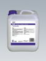
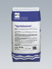
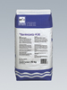
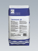
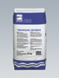
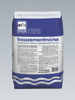

Ремонт каменных кладок

АнтисульфатAntisulfat
Водный раствор, обладающий низкой вязкостью для обработки каменных кладок. Применяется в качестве вспомогательного средства при ремонте каменных кладок и дополнительной герметизации подвалов для защиты влажных каменных кладок от солей.
Расход: зависимости от впитывающей способности основы - 0,5 - 1,0 кг/м.кв.
Хранение: в сухом и прохладном месте, беречь от мороза.
Упаковка: канистра 5 кг, 10 кг, 30 кг.

ШприцбевурфSpritzbewurf
Строительный раствор, модифицированный полимерами. Обладает хорошим сцеплением, в т. ч. с проблемными основами. Устойчив к низким температурам и солям оттаивания. Используется для создания прочного, несущего, адгезионного слоя под штукатурку, наносимую на минеральные поверхности. Смешанный с адгезионной эмульсией может наноситься даже на гладкие, не впитывающие поверхности.Giscode ZP1
Расход: при нанесении пупырчатого слоя, покрывающего 70% - от 3 до 4 кг/м.кв.
Упаковка: мешок 25 кг.

Sanierputz K30 fein
"Дышащая", водоотталкивающая санирующая штукатурка на основе цемента. Размер зёрен меньше 1мм. Обладает очень высокой паропроницаемостью.
Проверка и независимый контроль согласно директиве WTA 2-2-9.1
Для внутренних и наружных работ. Не пригодна для цокольных работ. Для ремонта влажных каменных кладок и для оштукатуривания заново каменных кладок, поврежденных морозом и солями. Защищает от образования конденсата, и предотвращает тем самым возникновение плесени, грибков и т.п. Идеальное средство для санации архитектурных памятников.
Giscode ZP1
Расход: при толщине слоя 2 см - ок. 20 кг/м.кв.
Упаковка: мешок 20 кг.

Штукатурка санирующая АКSanierputz AK
"Дышащая", водоотталкивающая санирующая штукатурка на основе трассового цемента. Обладает высокой паропроницаемостью. Устойчива к низким температурам и солям оттаивания.
По своим характеристикам превосходит требования директивы WTA 2-2-91. Для внутренних и наружных работ. Непригодна для цокольных работ. Для ремонта влажных каменных кладок и для оштукатуривания заново каменных кладок, поврежденных морозом и солями. Защищает от образования конденсата, и предотвращает тем самым возникновение плесени, грибков и т.п. За один прием может наноситься слой толщиной 2 см. Минимальная толщина слоя 2 см. Giscode ZP1
Расход: при толщине слоя 2 см - ок. 18 кг/м.кв.
Упаковка: мешок 25 кг.

Штукатурка санирующая стандартнаяSanierputz standard
Дышащая, водоотталкивающая санирующая штукатурка на основе трассового цемента. Обладает высокой паропроницаемостью. Устойчива к низким температурам и солям оттаивания. Для ремонта влажных каменных кладок и для оштукатуривания заново каменных кладок, поврежденных морозом и солями. Защищает от образования конденсата. За один прием может наноситься слой толщиной 2 см. Применяется также в качестве цокольной штукатурки.
Giscode ZP1
Расход: при толщине слоя 2 см - ок. 24 кг/м.кв.
Упаковка: мешок 25 кг.
Штукатурка санирующая - белая
Sanierputz weiss
"Дышащая", водоотталкивающая белая санирующая штукатурка на основе цемента. Обладает высокой паропроницаемостью. Устойчива к низким температурам и солям оттаивания. Применение аналогично штукатурке К30. Giscode ZP1
Расход: при толщине слоя 2 см - ок. 20 кг/м.кв.
Упаковка: мешок 25 кг.

Трассовый растворTrasszementmortel
Сухой строительный раствор группы MG III. Для использования внутри и снаружи помещений. Макс. размер зерна 4 мм. Устойчив к низким температурам и солям оттаивания. Для укладки плит из натурального камня, керамических плит, терракоты и готовых бетонных блоков на полах, в качестве ступеней и подоконников. Для укладки мостовых, подвергающихся высоким нагрузкам. Используется в качестве раствора для каменной кладки и штукатурного раствора, наносится вручную. Используется также на влажных кладках в качестве выравнивающей основы под дополнительную внутреннюю гидроизоляцию или санирующую штукатурку. Материал пластичен и лёгок в нанесении, затвердевает под воздействием воды, предотвращает выцветание укладываемого материала.
Giscode ZP1
Расход: ок. 1,3 кг/м.кв. / 1мм слоя
Хранение: в сухом и прохладном месте
Упаковка: мешок 40 кг
 Штукатурка - Файн Белая
Штукатурка - Файн Белая
Feinoberputz weiss
Верхняя штукатурка, устойчивая к погодным условиям. Обладает повышенной прочностью. Для нанесения гладких, мелкозернистых белых покрытий на слои санирующих штукатурок. Не пригодна для покрытия штукатурок на основе гипса и ангидрида, а также штукатурок группы PI. Giscode ZP1
Расход: ок. 1,5 кг/м.кв./ 1мм слоя.
Упаковка: мешок 25 кг.